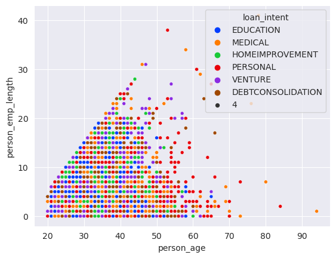

import pandas as pd
import numpy as np
url = "https://raw.githubusercontent.com/PhilChodrow/ml-notes/main/data/credit-risk/train.csv"
df_train = pd.read_csv(url)Part A: Grab the data
import seaborn as sns
import matplotlib.pyplot as plt
sns.set_style("darkgrid")
sns.set_palette("bright")
sns.set_context
figure1 = sns.relplot(data=df_train, x="loan_amnt", y="loan_grade", col="loan_intent", hue ="loan_status", col_wrap=3)
figure2 = sns.relplot(data=df_train, x="loan_amnt", y="loan_grade", col="person_home_ownership", hue ="loan_status", col_wrap=2)
Exploring new graphs, I want to potentially answer the questions
figure3=sns.scatterplot(data=df_train, x='person_age', y='person_emp_length', hue='loan_intent')df_over_100_age = df_train[df_train['person_age']>100]
df_over_100_age| person_age | person_income | person_home_ownership | person_emp_length | loan_intent | loan_grade | loan_amnt | loan_int_rate | loan_status | loan_percent_income | cb_person_default_on_file | cb_person_cred_hist_length | |
|---|---|---|---|---|---|---|---|---|---|---|---|---|
| 1561 | 144 | 250000 | RENT | 4.0 | VENTURE | C | 4800 | 13.57 | 0 | 0.02 | N | 3 |
| 2043 | 123 | 80004 | RENT | 2.0 | EDUCATION | B | 20400 | 10.25 | 0 | 0.25 | N | 3 |
| 6493 | 144 | 200000 | MORTGAGE | 4.0 | EDUCATION | B | 6000 | 11.86 | 0 | 0.03 | N | 2 |
| 18067 | 144 | 6000000 | MORTGAGE | 12.0 | PERSONAL | C | 5000 | 12.73 | 0 | 0.00 | N | 25 |
df_under_100_age_and_under_60_emp_years = df_train[(df_train['person_age']<100) & (df_train['person_emp_length']<60)]
figure4=sns.scatterplot(data=df_under_100_age_and_under_60_emp_years, x='person_age', y='person_emp_length', hue='loan_intent', size=4)
#18-24 #25-34 #35-44 45-64 65+
#lets make a summary table
#I want to see the average amount per age group
#these age bands are defined by the US 2020 census
#float('inf') is so we take into account all people above this value
df_under_100_age = df_train[(df_train['person_age']<100)]
age_bins = [18, 25, 35, 45, 65, float('inf')]
age_labels = ['18-24', '25-34', '35-44', '45-64', '65+']
df_under_100_age['age_band'] = pd.cut(df_under_100_age['person_age'], bins=age_bins, labels=age_labels, right=False)
most_common_intent_loan_by_age = df_under_100_age.groupby('age_band')['loan_intent'].agg(lambda x: x.value_counts().index[0])/tmp/ipykernel_721153/406788686.py:10: SettingWithCopyWarning:
A value is trying to be set on a copy of a slice from a DataFrame.
Try using .loc[row_indexer,col_indexer] = value instead
See the caveats in the documentation: https://pandas.pydata.org/pandas-docs/stable/user_guide/indexing.html#returning-a-view-versus-a-copy
df_under_100_age['age_band'] = pd.cut(df_under_100_age['person_age'], bins=age_bins, labels=age_labels, right=False)
/tmp/ipykernel_721153/406788686.py:12: FutureWarning: The default of observed=False is deprecated and will be changed to True in a future version of pandas. Pass observed=False to retain current behavior or observed=True to adopt the future default and silence this warning.
most_common_intent_loan_by_age = df_under_100_age.groupby('age_band')['loan_intent'].agg(lambda x: x.value_counts().index[0])summary_loan_intent_by_age = df_under_100_age.pivot_table(index='age_band', columns='loan_intent', aggfunc='size', fill_value=0)
print(most_common_intent_loan_by_age)
summary_loan_intent_by_ageage_band
18-24 EDUCATION
25-34 MEDICAL
35-44 MEDICAL
45-64 PERSONAL
65+ MEDICAL
Name: loan_intent, dtype: object| loan_intent | DEBTCONSOLIDATION | EDUCATION | HOMEIMPROVEMENT | MEDICAL | PERSONAL | VENTURE |
|---|---|---|---|---|---|---|
| age_band | ||||||
| 18-24 | 1559 | 2560 | 591 | 1708 | 1608 | 1811 |
| 25-34 | 2122 | 2052 | 1885 | 2505 | 2196 | 2224 |
| 35-44 | 413 | 434 | 355 | 508 | 424 | 491 |
| 45-64 | 81 | 76 | 71 | 100 | 169 | 86 |
| 65+ | 3 | 3 | 0 | 14 | 10 | 1 |